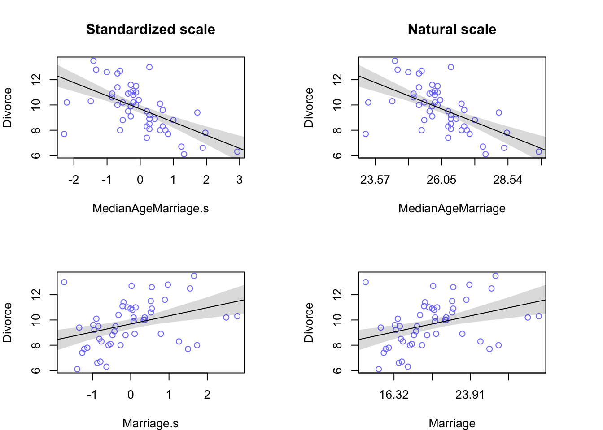

Di = the divorce rate for State i
Ai = State i’s median age at marriage
Code
par(mfrow =c(2, 2), mar =c(4, 4, 4, 4))library(rethinking)# load datadata(WaffleDivorce)d<-WaffleDivorce## Median age at marriage vs. divorce rate# standardize predictord$MedianAgeMarriage.s<-(d$MedianAgeMarriage-mean(d$MedianAgeMarriage))/sd(d$MedianAgeMarriage)# fit modelm5.1<-rethinking::map(alist(Divorce~dnorm(mu , sigma) ,mu<-a+bA*MedianAgeMarriage.s ,a~dnorm(10 , 10) ,bA~dnorm(0 , 1) ,sigma~dunif(0 , 10)) , data =d)# Check precis outputprecis(m5.1)
mean sd 5.5% 94.5%
a 9.688054 0.2045505 9.361142 10.0149648
bA -1.042756 0.2025752 -1.366510 -0.7190018
sigma 1.446693 0.1448420 1.215207 1.6781785
Code
# each additional standard deviation of delay in marriage (1.24 years- the difference between# two data points after converting back to natural scale) predicts a decrease of # about one divorce per thousand adults, with a 89% interval from about −1.4 to −0.7.# So it’s reliably negative, even though the magnitude of the difference may vary quite a lot—# the upper bound is half the lower bound. Of course there’s nothing special about the interval# boundaries, but the magnitude of the difference means that even though the association here # (conditional on model and data) is implausibly positive, it could be both much stronger # or weaker than the mean.# compute percentile interval of meanMAM.seq<-seq( from=-3 , to=3.5 , length.out=30)mu<-link(m5.1 , data=data.frame(MedianAgeMarriage.s=MAM.seq))mu.PI<-apply(mu , 2 , PI)# plot it allplot(Divorce~MedianAgeMarriage.s , data=d , col=rangi2 , main ="Standardized scale")abline(m5.1)shade(mu.PI , MAM.seq)# Convert to natural scaleplot(Divorce~MedianAgeMarriage.s , data=d , col=rangi2, xaxt ="n", xlab ="MedianAgeMarriage", main ="Natural scale")at<-c(-3, -2, -1, 0, 1, 2, 3, 4)labels<-at*sd(d$MedianAgeMarriage)+mean(d$MedianAgeMarriage)axis(side =1 , at =at , labels =round(labels,2))abline(m5.1)shade(mu.PI , MAM.seq)## Marriage rate vs. divorce rate# standardize predictor (marriage rate)d$Marriage.s<-(d$Marriage-mean(d$Marriage))/sd(d$Marriage)# fit modelm5.2<-rethinking::map(alist(Divorce~dnorm(mu , sigma) ,mu<-a+bR*Marriage.s ,a~dnorm(10 , 10) ,bR~dnorm(0 , 1) ,sigma~dunif(0 , 10)) , data =d)# check precis outputprecis(m5.2)
mean sd 5.5% 94.5%
a 9.6881784 0.2364177 9.3103373 10.066019
bR 0.6437432 0.2324512 0.2722413 1.015245
sigma 1.6721927 0.1672787 1.4048490 1.939536
Code
# This shows an increase of 0.6 divorces for every additional standard deviation # of marriage rate (3.8). this relationship isn’t as strong as the previous one.# compute percentile interval of meanMAM.seq<-seq( from=-3 , to=3 , length.out=30)mu<-link(m5.2 , data=data.frame(Marriage.s=MAM.seq))mu.PI<-apply(mu , 2 , PI)# plot it allplot(Divorce~Marriage.s , data=d , col=rangi2)abline(m5.2)shade(mu.PI , MAM.seq)# Convert to natural scaleplot(Divorce~Marriage.s , data=d , col=rangi2, xaxt ="n", xlab ="Marriage")at<-c(-3, -2, -1, 0, 1, 2, 3)labels<-at*sd(d$Marriage)+mean(d$Marriage)axis(side =1 , at =at , labels =round(labels,2))abline(m5.2)shade(mu.PI , MAM.seq)

Merely comparing parameter means between different bivariate regressions is no way to decide which predictor is better. Both of these predictors could provide independent value, or they could be redundant, or one could eliminate the value of the other. So we’ll build a multivariate model with the goal of measuring the partial value of each predictor. The question we want answered is:
What is the predictive value of a variable, once I already know all of the other predictor variables?
So for example once you fit a multivariate regression to predict divorce using both marriage rate and age at marriage, the model answers the questions:
After I already know marriage rate, what additional value is there in also knowing age at marriage?
After I already know age at marriage, what additional value is there in also knowing marriage rate?
The parameter estimates corresponding to each predictor are the (often opaque) answers to these questions.
Multivariate notation
Multivariate regression formulas look a lot like the polynomial models- they add more parameters and variables to the definition of \(\mu_i\). The strategy is straightforward:
Nominate the predictor variables you want in the linear model of the mean.
For each predictor, make a parameter that will measure its association with the outcome.
Multiply the parameter by the variable and add that term to the linear model.
Example model that predicts divorce rate, using both marriage rate and age at marriage:
This is an R Markdown document. Markdown is a simple formatting syntax for authoring HTML, PDF, and MS Word documents. For more details on using R Markdown see http://rmarkdown.rstudio.com.
When you click the Knit button a document will be generated that includes both content as well as the output of any embedded R code chunks within the document. You can embed an R code chunk like this:
---title: "Statistical_Rethinking_RM"author: "SM"date: "`r format(Sys.time(), '%B %d, %Y')`"format: html: toc: true toc_float: true toc-title: "Contents" toc-depth: 5 toc-location: left number_sections: true fig_caption: true code-tools: true code-fold: true code-summary: 'Show code' code-link: true code_highlight: tango code_download: true theme: sandstone highlight: tango smooth-scroll: true mathjax: local self_contained: false---```{r setup, include=FALSE}knitr::opts_chunk$set(echo =TRUE)```## Spurious associationLinear regression model for correlation between age at marriage and divorce rate:\begin{align*}\text{D}_i &\sim \text{Normal}(\mu_i, \sigma) \\\mu_i &= \alpha + \beta_A \text{A}_i \\\alpha &\sim \text{Normal}(10, 10) \\\beta_A &\sim \text{Normal}(0, 1) \\\sigma &\sim \text{Uniform}(0, 10)\end{align*}```Di = the divorce rate for State iAi = State i’s median age at marriage``````{r 5.1, message=FALSE, warning=FALSE}par(mfrow =c(2, 2), mar =c(4, 4, 4, 4))library(rethinking)# load datadata(WaffleDivorce)d <- WaffleDivorce## Median age at marriage vs. divorce rate# standardize predictord$MedianAgeMarriage.s <- (d$MedianAgeMarriage-mean(d$MedianAgeMarriage))/sd(d$MedianAgeMarriage)# fit modelm5.1<- rethinking::map(alist( Divorce ~dnorm( mu , sigma ) , mu <- a + bA * MedianAgeMarriage.s , a ~dnorm( 10 , 10 ) , bA ~dnorm( 0 , 1 ) , sigma ~dunif( 0 , 10 )) , data = d )# Check precis outputprecis(m5.1)# each additional standard deviation of delay in marriage (1.24 years- the difference between# two data points after converting back to natural scale) predicts a decrease of # about one divorce per thousand adults, with a 89% interval from about −1.4 to −0.7.# So it’s reliably negative, even though the magnitude of the difference may vary quite a lot—# the upper bound is half the lower bound. Of course there’s nothing special about the interval# boundaries, but the magnitude of the difference means that even though the association here # (conditional on model and data) is implausibly positive, it could be both much stronger # or weaker than the mean.# compute percentile interval of meanMAM.seq <-seq( from=-3 , to=3.5 , length.out=30 )mu <-link( m5.1 , data=data.frame(MedianAgeMarriage.s=MAM.seq) )mu.PI <-apply( mu , 2 , PI )# plot it allplot( Divorce ~ MedianAgeMarriage.s , data=d , col=rangi2 , main ="Standardized scale")abline( m5.1 )shade( mu.PI , MAM.seq )# Convert to natural scaleplot( Divorce ~ MedianAgeMarriage.s , data=d , col=rangi2, xaxt ="n",xlab ="MedianAgeMarriage", main ="Natural scale")at <-c(-3, -2, -1, 0, 1, 2, 3, 4)labels <- at*sd(d$MedianAgeMarriage) +mean(d$MedianAgeMarriage)axis(side =1 , at = at , labels =round(labels,2))abline( m5.1 )shade( mu.PI , MAM.seq )## Marriage rate vs. divorce rate# standardize predictor (marriage rate)d$Marriage.s <- (d$Marriage -mean(d$Marriage))/sd(d$Marriage)# fit modelm5.2<- rethinking::map(alist( Divorce ~dnorm( mu , sigma ) , mu <- a + bR * Marriage.s , a ~dnorm( 10 , 10 ) , bR ~dnorm( 0 , 1 ) , sigma ~dunif( 0 , 10 )) , data = d )# check precis outputprecis(m5.2)# This shows an increase of 0.6 divorces for every additional standard deviation # of marriage rate (3.8). this relationship isn’t as strong as the previous one.# compute percentile interval of meanMAM.seq <-seq( from=-3 , to=3 , length.out=30 )mu <-link( m5.2 , data=data.frame(Marriage.s=MAM.seq) )mu.PI <-apply( mu , 2 , PI )# plot it allplot( Divorce ~ Marriage.s , data=d , col=rangi2 )abline( m5.2 )shade( mu.PI , MAM.seq )# Convert to natural scaleplot( Divorce ~ Marriage.s , data=d , col=rangi2, xaxt ="n",xlab ="Marriage")at <-c(-3, -2, -1, 0, 1, 2, 3)labels <- at*sd(d$Marriage) +mean(d$Marriage)axis(side =1 , at = at , labels =round(labels,2))abline( m5.2 )shade( mu.PI , MAM.seq )```<br>Merely comparing parameter means between different bivariate regressions is no way to decide which predictor is better. Both of these predictors could provide independent value, or they could be redundant, or one could eliminate the value of the other. So we’ll build a multivariate model with the goal of measuring the partial value of each predictor. The question we want answered is: ***What is the predictive value of a variable, once I already know all of the other predictor variables?***So for example once you fit a multivariate regression to predict divorce using both marriage rate and age at marriage, the model answers the questions: (1) After I already know marriage rate, what additional value is there in also knowing age at marriage? (2) After I already know age at marriage, what additional value is there in also knowing marriage rate?The parameter estimates corresponding to each predictor are the (often opaque) answers to these questions.<br>### Multivariate notationMultivariate regression formulas look a lot like the polynomial models- they add more parameters and variables to the definition of $\mu_i$. The strategy is straightforward:(1) Nominate the predictor variables you want in the linear model of the mean.(2) For each predictor, make a parameter that will measure its association with the outcome.(3) Multiply the parameter by the variable and add that term to the linear model.Example model that predicts divorce rate, using both marriage rate and age at marriage:\begin{align*}\text{D}_i &\sim \text{Normal}(\mu, \sigma)\ &&& \text{[likelihood]}\\\mu_i &= \alpha + \beta_R R_i + \beta_A A_i\ &&& \text{[linear model]}\\\alpha &\sim \text{Normal}(10, 10)\ &&& \text{[prior for }\alpha]\\\beta_R &\sim \text{Normal}(0, 1)\ &&& \text{[prior for }\beta_R]\\\beta_A &\sim \text{Normal}(0, 1)\ &&& \text{[prior for }\beta_A]\\\sigma &\sim \text{Uniform}(0, 10)\ &&& \text{[prior for }\sigma]\end{align*}```R = marriage rate A = age at marriage```<br><spanstyle="color:brown"><spanstyle="text-decoration:underline">**Compact notation and the design matrix**</span></span>Linear model with n number of predictor variables:$$\mu_i = \alpha + \beta_1 \text{x}_{1i} + \beta_2 \text{x}_{2i} + ... + \beta_n \text{x}_{ni}$$## R MarkdownThis is an R Markdown document. Markdown is a simple formatting syntax for authoring HTML, PDF, and MS Word documents. For more details on using R Markdown see <http://rmarkdown.rstudio.com>.When you click the **Knit** button a document will be generated that includes both content as well as the output of any embedded R code chunks within the document. You can embed an R code chunk like this:```{r cars}summary(cars)```## Including PlotsYou can also embed plots, for example:```{r pressure, echo=FALSE}plot(pressure)```Note that the `echo = FALSE` parameter was added to the code chunk to prevent printing of the R code that generated the plot.![\Large \begin{align*} \text{D}_i &\sim \text{Normal}(\mu, \sigma) & \text{[likelihood]}\\\mu_i &= \alpha + \beta_R R_i + \beta_A A_i & \text{[linear model]}\\\alpha &\sim \text{Normal}(10, 10) & \text{[prior for }\alpha]\\\beta_R &\sim \text{Normal}(0, 1) & \text{[prior for }\beta_R]\\\beta_A &\sim \text{Normal}(0, 1) & \text{[prior for }\beta_A]\\\sigma &\sim \text{Uniform}(0, 10) & \text{[prior for }\sigma]\end{align*}](https://latex.codecogs.com/svg.latex?\Large&space; \begin{align*} \text{D}_i &\sim \text{Normal}(\mu, \sigma) & \text{[likelihood]}\\ \mu_i &= \alpha + \beta_R R_i + \beta_A A_i & \text{[linear model]}\\ \alpha &\sim \text{Normal}(10, 10) & \text{[prior for }\alpha]\\ \beta_R &\sim \text{Normal}(0, 1) & \text{[prior for }\beta_R]\\ \beta_A &\sim \text{Normal}(0, 1) & \text{[prior for }\beta_A]\\ \sigma &\sim \text{Uniform}(0, 10) & \text{[prior for }\sigma] \end{align*})